游戏榜单
→总榜、益智解谜、家庭
WEEKLY INTELLIGENCE REPORT
汇报人：盖麒
从榜单、新游到内容与产品趋势，快速捕捉本周游戏行业脉冲。
THIS WEEK
总榜、益智解谜、家庭
《Yarn Flow》
《黑神话：钟馗》
IP 商业化与 AI 产品
RANKING SNAPSHOT · 01
免费 / 付费 / 畅销
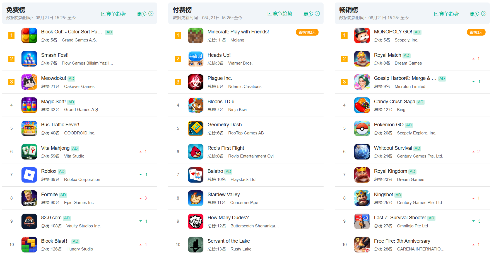
数据更新时间：08 月 21 日 15:25
03 / 13RANKING SNAPSHOT · 02
免费 / 付费 / 畅销
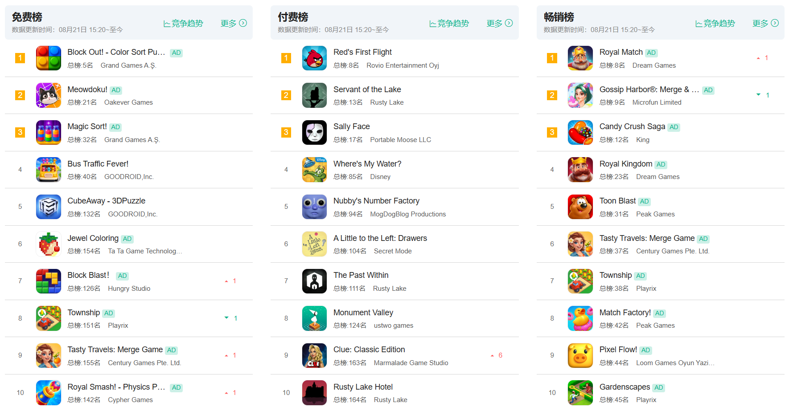
数据更新时间：08 月 21 日 15:20
04 / 13RANKING SNAPSHOT · 03
免费 / 付费 / 畅销
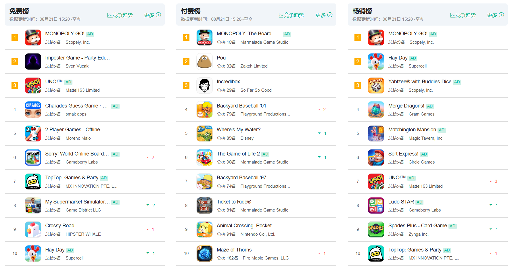
数据更新时间：08 月 21 日 15:20
05 / 13NEW GAME TEST
毛线 × 传送带
一场轻量的顺序解谜。
点击不同颜色的毛线卷，让毛线进入轨道并流向对应颜色区域；清空场上所有毛线，即可过关。
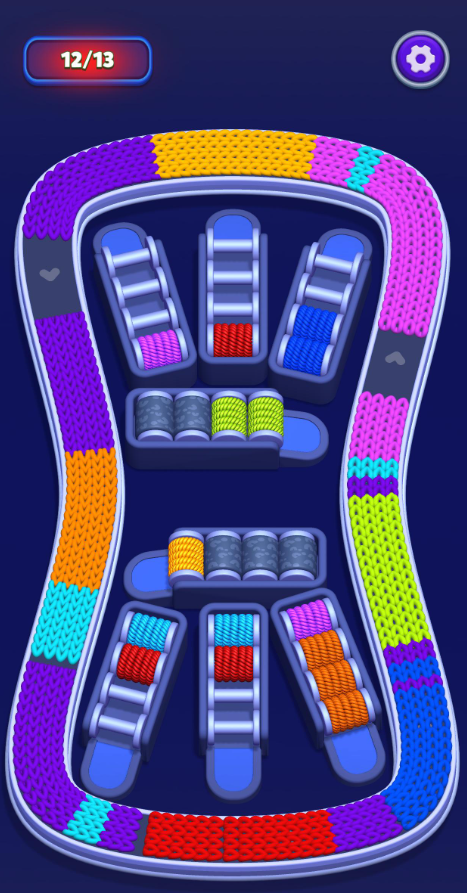
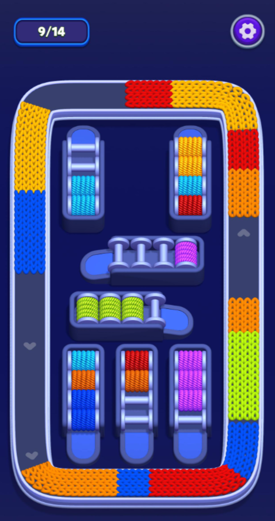
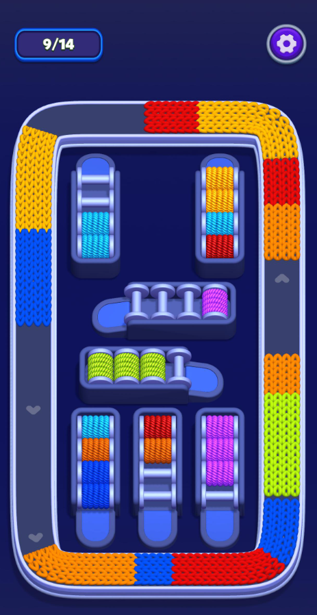
EXPERIENCE JUDGMENT
点击不同颜色的毛线卷，使其进入轨道、流向对应颜色区域。
点击顺序与防堵塞。过早释放不合适的颜色，会占用轨道或临时空间。
毛线流动、颜色归类与传送带动画，使传统 Sort / Jam 的体验更轻、更解压。
体验判断
玩法底层并不复杂，优势主要来自题材辨识度、流动反馈与“点错一步造成堵塞”的即时后果。
后续值得观察
GAME NEWS · AUG 20
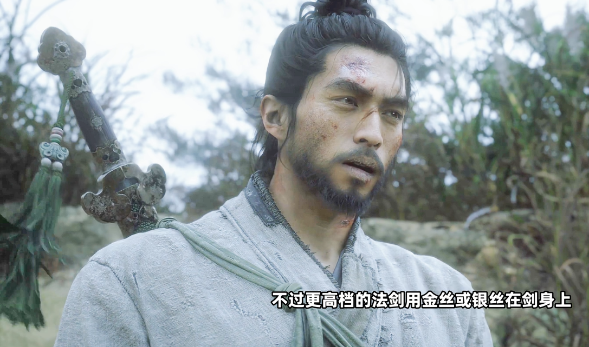
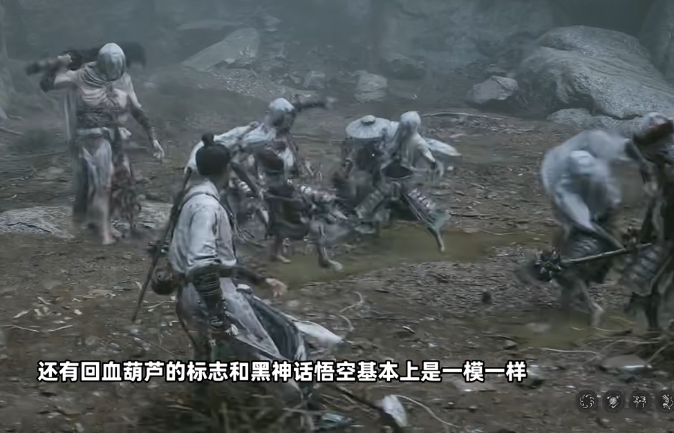
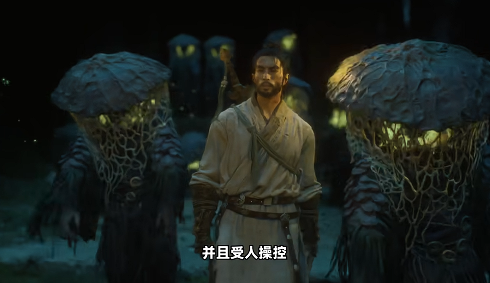
首次较完整展示战斗、关卡流程及部分剧情内容；新作延续中国传统文化与志怪题材方向，同时开始呈现不同于《悟空》的角色、战斗体验与世界观。
08 / 13INDUSTRY OBSERVATION
《黑神话：悟空》成功后，游戏科学没有把前作公式化复制，而是尝试在同一品牌下拓展新的题材与体验。
这份持续高关注，也为国产高品质 PC / 主机游戏的下一阶段提供了市场验证。
中国传统文化
与志怪叙事
新角色、新战斗
与新世界观
高品质 PC / 主机
＋ 中国题材 ＋ 全球发行
IP × LUXURY
珠宝艺术家 Philip Gefaell 打造 Ash Charizard Ring，以立体喷火龙作为核心设计，仅制作 1 件。
趋势观察
成熟游戏 / 动漫 IP 的商业化边界，正从服饰、潮玩与联名商品，进一步向高级珠宝与收藏级奢侈品延伸。
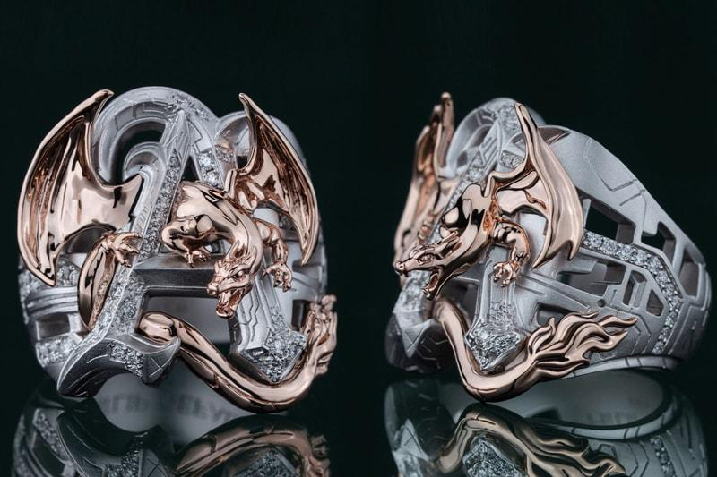
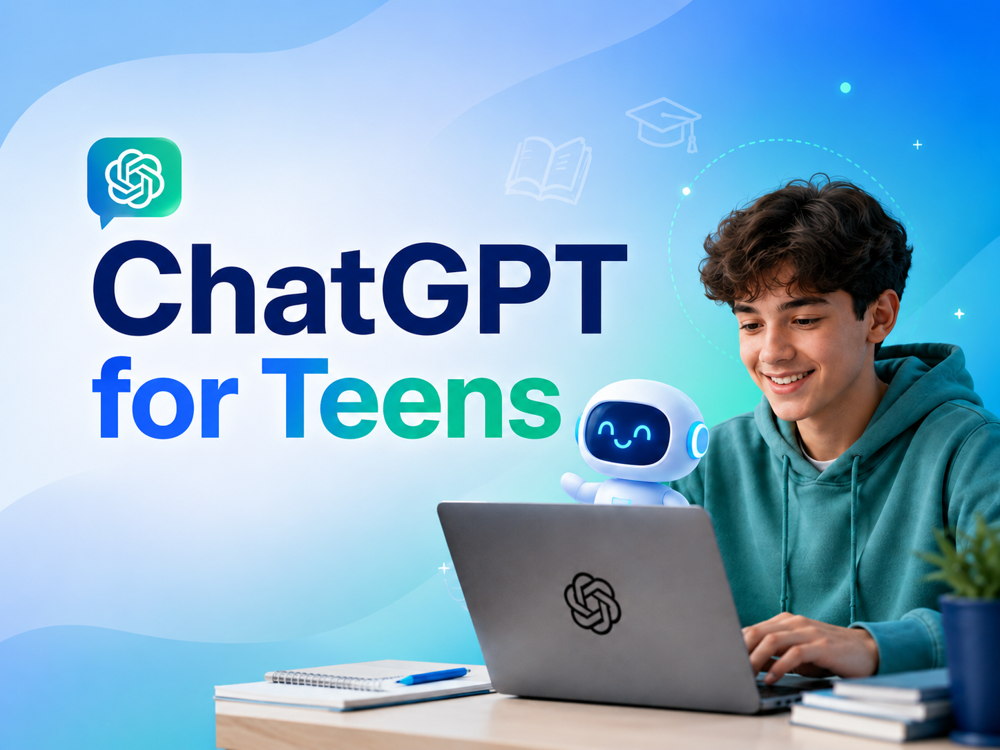
AI PRODUCT SIGNAL
13–17 岁
OpenAI 本周正式推出面向青少年的 ChatGPT 版本，强化内容保护，并加入家长控制、Quiet Hours 与学习辅助功能。
AI 产品正从“一个产品服务所有用户”，转向按年龄、职业与使用场景进行分层设计。
SIGNALS, NOT NOISE
低理解成本 + 可视化阻塞，仍是轻度解谜做出差异化与买量表达的有效组合。
Yarn Flow高品质 PC / 主机、中华文化题材与全球发行的路线，仍能持续凝聚市场注意力。
黑神话：钟馗成熟 IP 向高端消费品延展，AI 向年龄与场景分层，产品边界都在向更细处生长。
Pokémon · ChatGPTEND OF REPORT
游戏行业周报 · 2026.08.21
Q&A